Crypto and money, made practical
الثقافة المالية والعملات المشفّرة، عمليًاكيف تعمل البلوكتشين، وكيف تفحص أي رمز قبل أن تلمسه، وكيف تحمي نفسك من الاحتيال.

معًا نتعرّف أكثر إلى صناعة إيران وشركاتها وبيئة الأعمال فيها، ونتعلّم العملات المشفّرة والتقنية المالية بلغة بسيطة.
Learn · Connect · Evolve
Photo:الصورة: Amir PashaeiCC BY-SA 4.0


Digital services are 56% of world services exports. Which fields pay, where to find clients, how money can actually be received, and how real it all is.
بازار، 16 حوزه، مشترییابی، اینترنت، تحریمها و راههای دریافت پول؛ و اینکه چقدر واقعی است.
Read the story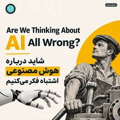

No wave of AI layoffs so far, but tasks and the way in for newcomers are changing. What this year’s evidence says and how to read the change.
اخراج گستردهای نیست، ولی وظیفهها و راه ورود تازهکارها عوض میشود. شواهد امسال و راه درست فهمیدن تغییر.
Read the story

“Treasury hacked” went viral. FinCEN says unauthorized access reached a limited subset of its systems. What is confirmed, what is not, and how to read such headlines.
«خزانهداری هک شد» وایرال شد. FinCEN از دسترسی غیرمجاز به بخش محدودی از سامانههایش میگوید. چه چیزی تأیید شده و چه چیزی نه؟
Read the story

Bitcoin is back under $60,000, ETFs are losing money and fear is at 11. Three scenarios for the week ahead and the one report that matters.
عاد البيتكوين إلى ما دون 60 ألف دولار، وصناديق ETF تخسر أموالًا، ومؤشر الخوف عند 11. ثلاثة سيناريوهات للأسبوع المقبل.
Read the story

Weight-loss drugs are moving money from snacks and pizza to protein, clothes and health. How big is the damage, where are the new markets, and where does Iran stand?
أدوية التنحيف تنقل المال من رقائق البطاطس والبيتزا إلى البروتين والملابس والصحة. ما حجم الضرر، وأين الأسواق الجديدة، وأين تقف إيران؟
Read the story

Circle and Paribu sign an MOU: how the digital dollar works, Türkiye’s lesson from 85% inflation, where Iran stands and the jobs ahead.
مذكرة تفاهم بين Circle وParibu: كيف يعمل الدولار الرقمي، ودرس تركيا من تضخم 85 بالمئة، وموقع إيران، وفرص العمل.
Read the story

Arak University’s magnesium and graphene oxide bone scaffold: lab results, how Germany and Korea got to market, Iran’s 5th place in the field, and the road to the operating room.
سقالة المغنيسيوم وأكسيد الغرافين من جامعة أراك: نتائج المختبر، وتجربة ألمانيا وكوريا، والمرتبة الخامسة لإيران، والطريق إلى غرفة العمليات.
Read the story

A very strong El Niño on top of long-term warming could make 2027 a record year. What it means for food prices, electricity, water and Iran.
قد تجعل ظاهرة إل نينيو قوية جدًا فوق الاحترار طويل الأمد عام 2027 عامًا قياسيًا. أثرها على أسعار الغذاء والكهرباء والماء وإيران.
Read the story

Russia, Saudi Arabia and Australia are history’s biggest CO2 exporters; Iran is fifth. The money, the jobs, the law and why current climate rules barely count it.
روسيا والسعودية وأستراليا أكبر مصدّري الكربون في التاريخ وإيران خامسة. المال والوظائف والقانون ولماذا لا تكاد القواعد الحالية تحسبه.
Read the story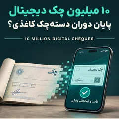
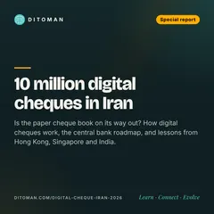
How digital cheques work, the central bank’s roadmap to an 80% electronic share, lessons from Hong Kong, Singapore, India and the UK, and how to use them safely.
كيف يعمل الشيك الرقمي، وخريطة طريق البنك المركزي حتى حصة 80 بالمئة، وتجارب هونغ كونغ وسنغافورة والهند وبريطانيا، ودليل الاستخدام الآمن.
Read the story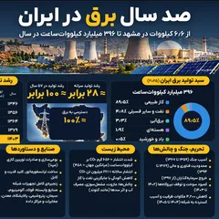

From Mashhad’s first 6.6 kW plant to 396 TWh a year: history, capacity, the grid, sanctions, the environment, the future, and 40 years compared with 15 neighbours.
من محطة مشهد بقدرة 6.6 كيلوواط إلى 396 مليار كيلوواط ساعة: التاريخ والقدرة والشبكة والعقوبات والبيئة والمستقبل ومقارنة مع 15 جارًا.
Read the story

A security-testing tool used in real attacks on South Korean banks: what the FBI, CrowdStrike and Check Point confirmed, what is still unproven, and what to do.
أداة لاختبار الأمان استُخدمت في هجوم حقيقي على البنوك الكورية: ما أكده FBI وCrowdStrike، وما لم يثبت بعد، وماذا ينبغي فعله.
Read the story

A country importing 95% of its gas plans powerships, LNG and a power corridor. The numbers, who wins, who worries, and what is still unproven.
بلد يستورد 95٪ من غازه يريد أن يصبح مركزًا بمحطات عائمة وغاز مسال وممر كهرباء. الأرقام والرابحون والمخاوف وما لم يثبت بعد.
Read the story

China 40 years ago, 20 years ago and today: $3.4 trillion invested abroad, 168 ports in 90 countries, loans, skills, and how it compares with Britain, France, the US and Japan.
الصين قبل 40 عامًا وقبل 20 عامًا واليوم: 3.4 تريليون دولار استثمارات خارجية، و168 ميناءً في 90 دولة، وقروض ومهارات ومقارنة مع بريطانيا وفرنسا وأمريكا واليابان.
Read the story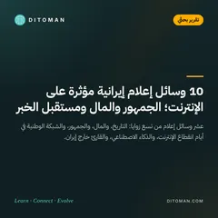

Ten major Iranian online outlets compared: history, money, audience, the national network during the shutdown, AI and readers abroad.
عشر وسائل إعلام من تسع زوايا: التاريخ، والمال، والجمهور، والشبكة الوطنية في أيام انقطاع الإنترنت، والذكاء الاصطناعي، والقارئ خارج إيران.
Read the story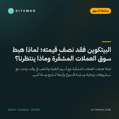

Why crypto fell with tech stocks and gold: the Fed, AI shares, ETF outflows and geopolitics, with one-week, four-week and six-month scenarios.
لماذا هبطت العملات المشفّرة مع أسهم التقنية والذهب في وقت واحد؛ مع سيناريوهات إيجابية وسلبية لأسبوع وأربعة أسابيع وستة أشهر.
Read the story

Daniel Chidiac on overthinking, boundaries and self-sabotage, and why a gap between event and reaction matters in money decisions.
كتاب دانيال شيدياك عن الإفراط في التفكير ووضع الحدود وتخريب الذات؛ ولماذا تهم المسافة بين الحدث ورد الفعل في المال أيضًا.
Read the story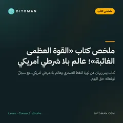

Peter Zeihan's 2016 book on shale and a world without America as policeman, with a scorecard of his forecasts.
كتاب بيتر زيهان عن ثورة النفط الصخري وعالم بلا شرطي أمريكي، مع سجلّ توقعاته حتى اليوم.
Read the story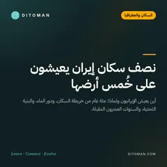

Where Iranians live and why: a century of the population map, water, infrastructure and the next 20 years.
أين يعيش الإيرانيون ولماذا: مئة عام من خريطة السكان، ودور الماء، والبنية التحتية، والسنوات العشرون المقبلة.
Read the story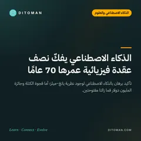
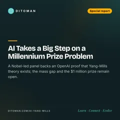
A Nobel-led panel backs OpenAI's Yang-Mills existence proof; the mass gap and the $1 million prize remain open.
تأكيد برهان بالذكاء الاصطناعي لوجود نظرية يانغ–ميلز؛ أما فجوة الكتلة وجائزة المليون دولار فما زالتا مفتوحتين.
Read the story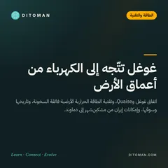
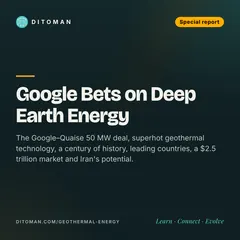
The Google–Quaise superhot geothermal deal, a century of history, leading countries, the market and Iran's potential.
اتفاق غوغل وQuaise، وتقنية الطاقة الحرارية الأرضية فائقة السخونة، وتاريخها وسوقها، وإمكانات إيران من مشكينشهر إلى دماوند.
Read the story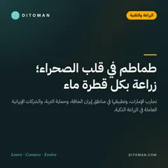

What the UAE is testing, where it fits in Iran, how it protects soil, and which Iranian companies already do it.
تجارب الإمارات، وتطبيقها في مناطق إيران الجافة، وحماية التربة، والشركات الإيرانية العاملة في الزراعة الذكية.
Read the story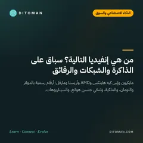

Micron, SK hynix, AMD, Arista and Marvell: official figures, ownership, Jensen Huang's exit and scenarios to 2030.
مايكرون وإس كيه هاينكس وAMD وأريستا ومارفل: أرقام رسمية بالدولار والتومان، والملكية، وتنحّي جنسن هوانغ، والسيناريوهات.
Read the story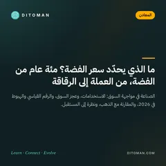

Industry versus markets: uses, the deficit, the 2026 record and crash, gold and other metals, and the outlook.
الصناعة في مواجهة السوق: الاستخدامات، وعجز السوق، والرقم القياسي والهبوط في 2026، والمقارنة مع الذهب، ونظرة إلى المستقبل.
Read the story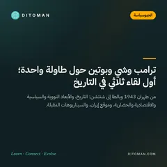

From Tehran 1943 and Yalta to Shenzhen: history, nuclear, political, economic and civilisational stakes, Iran and the scenarios ahead.
من طهران 1943 ويالطا إلى شنتشن: التاريخ، والأبعاد النووية والسياسية والاقتصادية والحضارية، وموقع إيران، والسيناريوهات المقبلة.
Read the story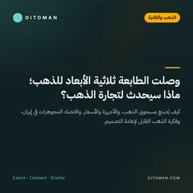

How gold powder is made, the machines and their prices, jewellery economics in Iran and the idea of re-designable gold.
كيف يُصنع مسحوق الذهب، والأجهزة والأسعار، واقتصاد المجوهرات في إيران، وفكرة الذهب القابل لإعادة التصميم.
Read the story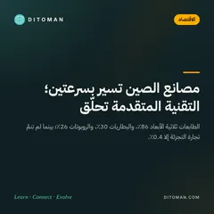

3D printers up 86%, batteries 30%, robots 26%, while retail sales grew just 0.4%: what it means for the world and Iran.
الطابعات ثلاثية الأبعاد 86٪، والبطاريات 30٪، والروبوتات 26٪؛ بينما لم تنمُ تجارة التجزئة إلا 0.4٪.
Read the story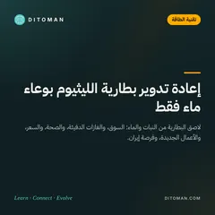

A plant-and-water battery binder: the market, emissions, health, prices, new businesses and the opportunity for Iran.
لاصق البطارية من النبات والماء: السوق، والغازات الدفيئة، والصحة، والسعر، والأعمال الجديدة، وفرصة إيران.
Read the story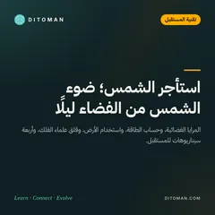

Orbital mirrors, the energy maths, land use, astronomers' alarm and four scenarios for the future.
المرايا الفضائية، وحساب الطاقة، واستخدام الأرض، وقلق علماء الفلك، وأربعة سيناريوهات للمستقبل.
Read the story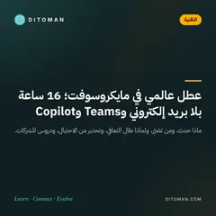

What happened, who was hit, why recovery took so long, scam warnings and how businesses can be less exposed.
ماذا حدث، ومن تضرّر، ولماذا طال التعافي، وتحذير من الاحتيال، ودروس للشركات.
Read the story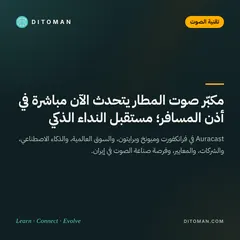

Auracast in Frankfurt, Munich and Brighton, the global market, AI, the companies, the standards and the opportunity for Iran.
Auracast في فرانكفورت وميونخ وبرايتون، والسوق العالمية، والذكاء الاصطناعي، والشركات، والمعايير، وفرصة صناعة الصوت في إيران.
Read the story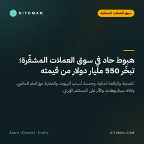

Liquidations, leverage, five causes, a one-year comparison, three scenarios and what it means for Iranian investors.
التصفية والرافعة المالية، وخمسة أسباب للهبوط، والمقارنة مع العام الماضي، وثلاثة سيناريوهات، والأثر على المستثمر الإيراني.
Read the story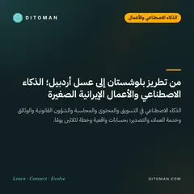

How AI cuts the cost of starting a small Iranian business: marketing, content, accounting, legal, paperwork, customer service and export, with a 30-day plan.
الذكاء الاصطناعي في التسويق والمحتوى والمحاسبة والشؤون القانونية والوثائق وخدمة العملاء والتصدير؛ بحسابات واقعية وخطة لثلاثين يومًا.
Read the story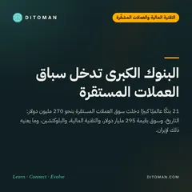

21 global banks commit about $270M to Project Faro: the history, the $295B market, fintech, blockchain and what it means for Iran.
21 بنكًا عالميًا كبيرًا دخلت سوق العملات المستقرة بنحو 270 مليون دولار: التاريخ، وسوق بقيمة 295 مليار دولار، والتقنية المالية، والبلوكتشين، وما يعنيه ذلك لإيران.
Read the story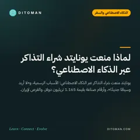

United banned AI agents from buying tickets: the official reasons, the CEO's "no new middleman", the money in a $1.165 trillion industry, and what it means for Iran.
يونايتد منعت شراء التذاكر عبر الذكاء الاصطناعي: الأسباب الرسمية، و«لا أريد وسيطًا جديدًا»، وأرقام صناعة بقيمة 1.165 تريليون دولار، والفرص لإيران.
Read the story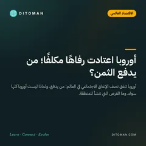
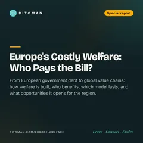
Europe accounts for half the world's social spending and its debt is rising: who pays, why Europe is not one story, and the opportunities it opens for the region.
أوروبا تنفق نصف الإنفاق الاجتماعي في العالم: من يدفع، ولماذا ليست أوروبا كلها سواء، وما الفرص التي تنشأ للمنطقة.
Read the story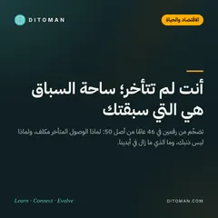

Double-digit inflation in 46 of 50 years: why late starters stand further back, why it is not their fault, and what is still in our hands.
تضخّم من رقمين في 46 عامًا من أصل 50: لماذا الوصول المتأخر مكلف، ولماذا ليس ذنبك، وما الذي ما زال في أيدينا.
Read the story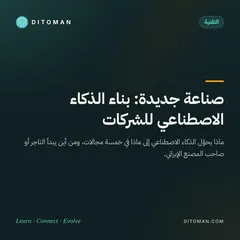

What AI turns into what in five fields, why AI system builders are becoming an industry, and where a business owner can start.
ماذا يحوّل الذكاء الاصطناعي إلى ماذا في خمسة مجالات، ومن أين يبدأ التاجر أو صاحب المصنع الإيراني.
Read the story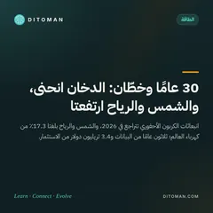

Fossil CO₂ is set to dip 0.4% in 2026 while solar and wind reach 17.3% of world power. Thirty years of data and $3.4 trillion of investment.
انبعاثات الكربون الأحفوري تتراجع في 2026، والشمس والرياح بلغتا 17.3٪ من كهرباء العالم؛ ثلاثون عامًا من البيانات و3.4 تريليون دولار من الاستثمار.
Read the story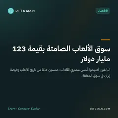
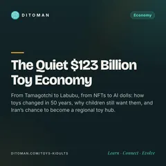
Adults now buy one in five toys. Fifty years of toys, why children still want them, and Iran's chance to become a regional toy hub.
البالغون أصبحوا خُمس مشتري الألعاب؛ خمسون عامًا من تاريخ الألعاب وفرصة إيران في سوق المنطقة.
Read the story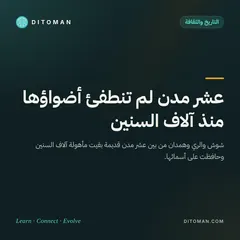
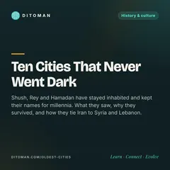
Shush, Rey and Hamadan are among ten ancient cities that stayed inhabited and kept their names, and they tie Iran to Syria and Lebanon.
شوش والري وهمدان من بين عشر مدن قديمة بقيت مأهولة آلاف السنين وحافظت على أسمائها.
Read the story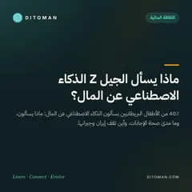
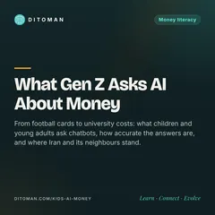
40% of UK kids turn to AI for money advice: what they ask, how accurate the answers are, and where Iran and its neighbours stand.
40٪ من الأطفال البريطانيين يسألون الذكاء الاصطناعي عن المال: ماذا يسألون، وما مدى صحة الإجابات، وأين تقف إيران وجيرانها.
Read the story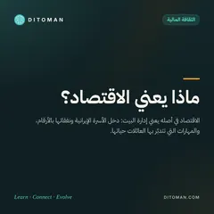

Economy once meant running a household: how families really live the economy, the Iranian household budget in numbers, and the skills they use to get by.
الاقتصاد في أصله يعني إدارة البيت: دخل الأسرة الإيرانية ونفقاتها بالأرقام، والمهارات التي تتدبّر بها العائلات حياتها.
Read the story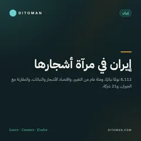

8,112 plant species, a century of change, the economy of trees and plants, Iran beside its neighbours, and 21 companies.
8,112 نوعًا نباتيًا، ومئة عام من التغيير، واقتصاد الأشجار والنباتات، والمقارنة مع الجيران، و21 شركة.
Read the story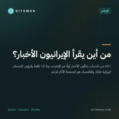

65% of 18–29s get news online first, 2.5% often read print papers, and economy is the most-read section.
65٪ من الشباب يتلقّون الأخبار أولًا عبر الإنترنت، و2.5٪ فقط يقرؤون الصحف الورقية غالبًا، والاقتصاد هو الصفحة الأكثر قراءة.
Read the story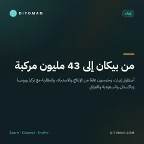

Iran's fleet, fifty years of making and importing, and how Türkiye, Russia, Pakistan, Saudi Arabia and Iraq compare.
أسطول إيران، وخمسون عامًا من الإنتاج والاستيراد، والمقارنة مع تركيا وروسيا وباكستان والسعودية والعراق.
Read the story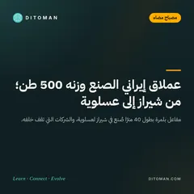

A 40-metre polymerization reactor built in Shiraz for a petrochemical complex in Asaluyeh, and the companies behind it.
مفاعل بلمرة بطول 40 مترًا صُنع في شيراز لعسلوية، والشركات التي تقف خلفه.
Read the story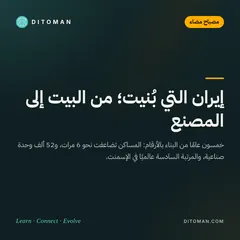

Fifty years of building in numbers: almost six times the homes, 52,000 industrial units, sixth in world cement.
خمسون عامًا من البناء بالأرقام: المساكن تضاعفت نحو 6 مرات، و52 ألف وحدة صناعية، والمرتبة السادسة عالميًا في الإسمنت.
Read the story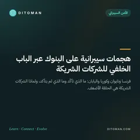

France, Taiwan, South Korea and Japan: what is confirmed, what is not, and why third parties are the weak link.
فرنسا وتايوان وكوريا واليابان: ما الذي تأكّد وما الذي لم يتأكد، ولماذا الشركات الشريكة هي الحلقة الأضعف.
Read the story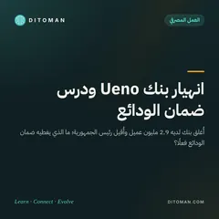

A digital bank with 2.9 million clients was seized, the president was removed, and what deposit guarantees really cover.
أُغلق بنك لديه 2.9 مليون عميل وأُقيل رئيس الجمهورية؛ ما الذي يغطيه ضمان الودائع فعلًا؟
Read the story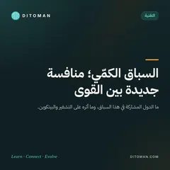

Who is racing, why quantum ranks with AI and nuclear power, and what it means for encryption and Bitcoin.
ما الدول المشاركة في هذا السباق، وما أثره على التشفير والبيتكوين.
Read the story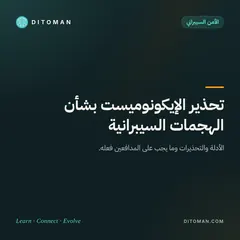

The Economist says AI has turbocharged hacks. The evidence, the warnings and what defenders must do.
الأدلة والتحذيرات وما يجب على المدافعين فعله.
Read the story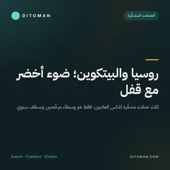

Bitcoin, Ether and USDT for retail through licensed intermediaries only, with a 300,000-ruble cap.
ثلاث عملات مشفّرة للناس العاديين، فقط عبر وسطاء مرخّصين وبسقف سنوي.
Read the story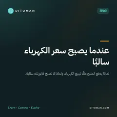

Why producers sometimes pay to sell power, and why your bill does not go negative.
لماذا يدفع المنتج مالًا ليبيع الكهرباء، ولماذا لا تصبح فاتورتك سالبة.
Read the story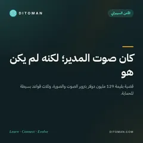

A $129M fraud case alleged to use cloned voices and faces, and three rules to protect yourself.
قضية بقيمة 129 مليون دولار بتزوير الصوت والصورة، وثلاث قواعد بسيطة للحماية.
Read the story
An Iranian surgical robot: what is documented and what is still the maker's claim.
من الجامعة إلى غرفة العمليات؛ ما هو موثّق وما يبقى ادعاءً من الشركة المصنّعة.
Read the story
An Iranian AI screening system meets a century-old export trade.
نظام ذكي لفحص الأفلاتوكسين، ومكانة الفستق الإيراني في العالم.
Read the story
Going out got 20% pricier than inflation, yet free meet-ups fell too.
الغلاء ليس المتهم الوحيد؛ حتى اللقاءات المجانية قلّت.
Read the story
One deposit in Yazd holds about as much zinc as all of Peru's reserves.
احتياطي في قلب صحراء يزد بحجم احتياطيات الزنك في البيرو كلها.
Read the story
An Iranian-made EO catalyst now runs Morvarid Petrochemical's glycol unit at full capacity.
محفّز EO إيراني يشغّل وحدة الغلايكول في بتروكيماويات مرواريد بكامل طاقتها.
Read the storyHow CinnaGen won EU marketing authorisation for Zandoriah.
قصة الترخيص الأوروبي لدواء زاندوريا من إنتاج سيناجن.
Read the story
What it can do, who gets to use it, and what Iranians can learn from it.
ماذا يفعل، ومن يستخدمه، وما الدرس لنا.
Read the story30 درسًا قصيرًا ثنائي اللغة، خطوة بخطوة: من المال والتضخم إلى البنوك وسلسلة الكتل والذكاء الاصطناعي.30 short bilingual lessons, step by step: from money and inflation to banks, blockchain and AI.
قاعدة تحريرية ثابتة في المحاور الثلاثة: معرفة حقيقية وإنجاز حقيقي، بلا تعليق سياسي من أي طرف.
كيف تعمل البلوكتشين، وكيف تفحص أي رمز قبل أن تلمسه، وكيف تحمي نفسك من الاحتيال.
تحليل صادق للتحولات القادمة، يُقرأ من حيث يقف جمهورنا فعلًا.
توثيق ما بناه الإيرانيون وشركاتهم، مع مصدر لكل رقم.
A structured map of what is made, mined, moved and seen in Iran: six branches, their official sub-branches, the leading companies, and a source for every number.


History, products, leadership and figures, sector by sector, with a source for each number.
Android app store for Persian speakers; 500,000+ apps
متجر تطبيقات أندرويد للناطقين بالفارسية؛ أكثر من 500 ألف تطبيق
View the recordBiosimilar drugs, laboratory reagents and recombinant proteins
أدوية بيولوجية مماثلة، وكواشف مخبرية، وبروتينات مؤتلفة
View the recordIranian e-commerce; since 2006
أكبر متجر إلكتروني في إيران؛ منذ 2006
View the recordASIC, SoC and FPGA design; the 32-bit Aristo microprocessor
تصميم رقائق ASIC وSoC وFPGA؛ المعالج الدقيق أريستو 32 بت
View the recordSina Robotic Surgical System
نظام سينا للجراحة الروبوتية
View the recordRide hailing with fixed prices; launched February 2014
طلب السيارات؛ سعر محدّد مسبقًا؛ انطلق في فبراير 2014
View the recordKraft and semi-kraft paper, corrugated board and cartons, cardboard; Yazd Industrial Town
ورق كرافت ونصف كرافت، وألواح وكرتون مضلّع، وكرتون؛ المدينة الصناعية في يزد
View the record
One of Iran's largest ethylene and polyethylene makers, in Asaluyeh, exporting over 70% of output
من أكبر منتجي الإيثيلين والبولي إيثيلين في إيران في عسلوية؛ أكثر من 70٪ من الإنتاج للتصدير
View the recordCoated MDF sheets and profiles, PVC wall panels, artificial stone, ceiling tiles; Anzali Free Zone, Gilan
ألواح وبروفيلات MDF مكسوّة، وكسوة جدران PVC، وحجر صناعي وبلاط أسقف؛ منطقة أنزلي الحرة، كيلان
View the recordHerbal medicines, cosmetics, food products and essential oils; Kashan, Isfahan (plant near Qamsar)
أدوية عشبية ومستحضرات تجميل وأغذية من النباتات الطبية؛ زيوت عطرية؛ كاشان، أصفهان (المصنع قرب قمصر)
View the recordPulp and paper; Gilan
لبّ الورق والورق؛ كيلان
View the recordRosewater, herbal distillates, natural syrups and dried herbs; Amirkabir 1 Industrial Town, Kashan
ماء الورد، والمقطّرات العشبية، والشراب الطبيعي، والنباتات الطبية المجففة؛ مدينة أميركبير الصناعية 1، كاشان
View the record«أميّو القرن الحادي والعشرين ليسوا من لا يستطيعون القراءة، بل من لا يستطيعون التعلم ونسيان ما تعلموه وإعادة التعلم.»
"The illiterate of the 21st century will not be those who cannot read and write, but those who cannot learn, unlearn, and relearn."
Ditoman takes its name from the Toman, the everyday name for Iranian money: a "digital Toman". TMN was deployed on BNB Smart Chain in February 2022 with one question behind it: can knowledge itself carry real value?
For nearly four years we stayed deliberately quiet. No marketing, no token sale, no launch. That history is on-chain for anyone to check, and it is the clearest sign this was never built for a quick pump.
Short lessons by topic, about five minutes each, in both languages, each ending with a quiz.
Lessons, short news explainers and updates, in Farsi and English. No signals, no hype.
TMN is the BEP-20 token behind Ditoman, planned for recognising real learning and contribution. It is not an investment product and we do not ask anyone to buy it.
Several unrelated tokens use the ticker TMN. This is the only official contract:
0x86a56e59f22Eaf3867EEeB41fB9BfA81BacE790d
نكتب نقاط الضعف أيضًا، لأن درس فحص الرموز يعلّمك أن تبحث عنها.
Phases, not dates. We report progress honestly, including what did not work.
Contract verified, ownership renounced, about 20% of supply out of circulation, bilingual lessons published, whitepaper final.
A Telegram community with real rules, seeded lessons and clear onboarding, before any invitation.
29 Oct 2026: all TMN/BNB liquidity in the project's main wallet locked until 29 Oct 2027. Verify the lock · What it means
7 آبان 1405 (29 أكتوبر 2026): كل سيولة TMN/BNB في المحفظة الرئيسية للمشروع مقفلة حتى 7 آبان 1406 (29 أكتوبر 2027).
Joining Persian-language crypto and diaspora communities, and the first public supply removal with proof.
Read ten lessons, pass a ten-question test and receive 500,000 TMN, for the first 1,000 people. Start here.
اقرأ عشرة دروس، وانجح في اختبار من عشرة أسئلة، واحصل على 500,000 TMN؛ لأول 1,000 شخص. ابدأ من هنا.
A bilingual education project built around three pillars: practical crypto and financial literacy, honest analysis of AI, energy and the future of work, and coverage of real achievements by Iranian people and businesses.
لا نطلب من أحد أن يشتري. معروض TMN مركّز. صفحة TMN واقرأها وقيّمه بالمعايير نفسها التي تقيّم بها أي رمز آخر.
No. Ditoman is an education project. Nothing here is investment advice, and the lessons are built to help you decide for yourself.
It is a permanent editorial rule. We document real knowledge and real achievement, and stay out of political commentary from any side.
Yes. The learn-and-earn pilot is open: read ten lessons, pass a ten-question test and receive 500,000 TMN, for the first 1,000 people. Start here.
نعم. برنامج «تعلّم واحصل على رمز» مفتوح: اقرأ عشرة دروس، وانجح في اختبار من عشرة أسئلة، واحصل على 500,000 TMN؛ لأول 1,000 شخص. ابدأ من هنا.
One document sets the direction. Read it before you trust anything we say.